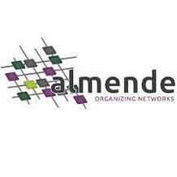
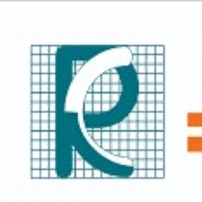
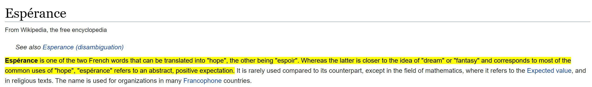

Lower limb amputation can be a huge impediment, not just for ones’s mobility, but overall well-being. Prostheses alleviate the challenges but controlling a robotic limb in a intuitive way can be a challenge in its own. Current powered legs are mostly well suited for simple rhythmic tasks like flatground walking.
Coordinated Movement is a new data-driven paradigm using whole-body coordination and examples of real-world movements for prosthesis control. It can very easiy handle complex and non-rhythmic real-world movements (like obstacle crossing). It is also a continuous control without explicit & awkward transition mechanisms to switch from one type of movement to another.
Powered limbs are better, lighter and more capable than ever. But with great powers comes great need for controllablility. In absence of good control, users still prefer passive limbs for their simplicity. Passive limbs are ill-equpped to handle complex terrains, induces an asymmetric gait resulting in stress to hip and back joints.
Open Source Leg is a low-cost prosthetic limb developed by Univ of Michigan to faciliate control research. In collaboration with the Univ of Michigan, we developed a real-time controller to realize our Coordinated Movement Control. Live kinematics were input to a pre-trained neural network to generate refernce trajectory to actuate the prosthetic knee joint.
Date:
Skills: PID control, mechatronics, PyTorch
Miscellaneous
A few other tinkerings
Remote office in Olympic National Park
A pandemic is the best time to run into the woods. But what must one do when one has a thesis to write.
One of my proudest achievements as an engineer was to be able to build a off-grid setup with marine deep cycle battery and full sine wave inverter. I rigged this up during the pandemic lockdown to be able to explore the Olympic Nat’l Park and complete my thesis. My favorite office space ever!
Undergrad Engineering Racing and Design Challenges at Indian Institute of Technology (IIT) TechFest
Objective: To build miniature racing beasts
Our team of four built a 3hull - Airboat (1:15 scale model) designed primarily for speed, powered by a 3.2cc engine. We won the Best Design and 3rd place in the race.
Also, built a miniature four wheel drive car (a 1:8 scale model) for IIT. The vehicle was powered by a 3cc engine and radio controlled. We placed 2nd National level.
Downhill Prosthesis CU Boulder 01/2011 – 12/2011
Advised by Prof Rodger Kram at University of Colorado at Boulder, I conducted independent research to develop prototype prosthesis using discarded skiis and dampers. Carbon fiber ski’s for elasticity and dampers for heat dissipation during down-hill travel.
I wish I could find a picture of this contraption.
“Mario-Cart” Competition (Mechatronics Course Project) CU Boulder
Objective: to build robotic Mario carts from ground up. Compete to spot and shoot rival team’s cart.
Designed PCBS for IR sensors, signal conditioning, power-supply and interfacing components with sbRio. Programmed sbRio in LabView.
We crashed and burned :(.
Skills: EAGLE PCB Design, sbRio, LabView
MultiRobot Surveillance Algortihm - Grad Class Project
Goal was to implement most efficient area coverage and intruder detection.
Implemented an algorithm to compute the amount of “stocastic” vs “planned” exploration polciy needed to optimally surveill an area. E.Coli based gradient seeking was used for “planned” exploration.
Skills: Matlab OOPs
Visual Localization for Prosthesis Control
Spatial awareness for better control.
One of challenges of prosthesis control is knowing the right movement type for any given time. Human use vision for navigating everyday environments.
We developed an applicaton built on Google’s Project Tango hardware platform which used visual features to estimate location in a known environment (SLAM). Location estimates and motion is used for estimating right movement or prosthetic locomotion mode.
Date: January 2017 - Mar 2019
Skills: Machine Learning(LDA,SVM) , Android, ROS, Google Tango, MATLAB
Myoelectric Control of Prosthetic Limbs
Protheses can vastly improve quality of life for people with amputation. A big challenge in prosthetic control, however, is conveying the user intent - connecting the mind and the machine.
Center of Bionic Medicine, under Dr Todd Kuiken, pioneered myo-electric control of prosthetic limbs. Using muscle signals as the interface, the next generation prostheses are directly controlled by the user. As a research engineer, I conceptualized and designed controllers, EMG acquisition systems; provided hardware support to prosthetists and researchers for OttoBock Hand, BiOMAnkle, VanderbiltLeg.
People with motor impairments are often unable to operate the assistive devices that could improve their quality of life. Robotics and machine learning can offer a chance to share the burden.
As a research engineer at Argall Lab at Rehabiliation Institute of Chicago (now Shirley Ryan Ability Lab), I supported software and hardware development of semi-autonomous assistive devices - JACO assistive robotic arms and smart wheelchair.
One must’nt get an engineering degree without atleast a single project paying tribute to the Force!! Blasphemy !!
For a Real Time Operating Sys class project, our team built a Robotic Sentinel Arm. Equipped with a sword and vision, 6 DOF crust-crawler arm to intercept and block the attack.
Date: 2011
Skills: RTOS, OpenCV
Self Assembly of Modular Robots
Replicators (European Commission FP7)
The REPLICATOR project, funded by the European Commission, focuses on the development of an advanced robotic system, consisting of a super-large-scale swarm of small autonomous mobile micro-robots that are capable of self-assembling into large artificial organisms. They will be used to build autonomous sensor networks, capable of self-spreading and self-maintaining in open-ended and hazardous environments.
Role
As a research intern at Almende B.V, in collaboration with 9 other universities across European Union, I investigated decentralized algorithms for assembling and metamorphosizing modular robots. Using Graph Grammar I was able to successfully assemble linear structures like snakes and complex organisms like a hexapod without any human intervention.
Imagine walking the world, with a blindfold. Thats how current prostheses navigate.
As part of my doctoral thesis, using an ego-centric camera, I showed that vision can provide crucial information about the current environment to deduce the right prosthetic movements. More interstingly, the results showed that vision sensor is able
detects changes in environment prior to kinematics or EMG based sensors. This early detection can be used to cue smooth and safe control transitions in powered limbs.
A limitation of results from vision based research is lack of generalizability. High accuracies are obtained in restricted lab settings or small enviroments. Knowledge ‘learned’ from other bigger datasets can be transferred and utilized to improve generalizability and accelerate deployment of vision sensors in prostheses. To offset my limited dataset, I used Transfer Learning technique to leverage the features learned from ImageNet dataset (1 million images) and showed improved accuracies as well.
Phd University of Washington Researcher at Veterans Affairs Hospital
Intuitive control of powered prosthetic legs using computer vision and natural body movements by applying machine learning.
Sept 2013 - Apr 2014
Research Engineer Rehabiliation Institute of Chicago Argall Lab
Adaptive control of assistive robotic JACO arm and semi-autonomous wheelchair navigation
Mar 2012 - Aug 2013
Research Engineer Center for Bionic Medicine (directed by Dr Todd Kuiken)
Project Lead - Electronics design and support for UL prosthesis control

July 2010-Jan 2011
Research Intern Almende (The Netherlands)
Investigate bio-inpsired algorithms for self-assembly of modular robots

Aug 2008-Jun 2009
Research Engineer Robonik (India)
Develop controllers for low-cost biomedical diagnostic devices
Publications
Coordinated Movement for Prosthesis Control: Temporal Factors and Attention - IEEE International Conference on Biomedical Robotics \& Biomechatronics (BioRob 2020)
I believe engineering and art, when applied in the right way, are the greatest devices towards the betterment of the human condition. To that end, I apply my skills in fields like robotics and machine learning in different walks of life - Rehabilitation, Agriculture, Environmental Protection.
Traveling, meeting different faces of humanity and the cultures we have concocted across the globe is always a source of joy. In my travels, I 've had the fortune of working on robotics research on 3 continents with the finest of folks - engineers, artists, prosthetists, surgeons, philosophers. I have worked as a researcher in 2 world-class rehabilitation hospitals and a bio-medical company.
I delved into powered prostheses control using natural body movements and vision as part of my Ph.D. research at the University of Washington, Seattle. As part of the engineering R & D at the Rehabilitation Institute of Chicago, I worked on the hardware design of myoelectric control of prostheses. These designs were spun off to create CoApt, one of the most advanced prosthetic control.
In my mid-twenties, I became fascinated by decentralized algorithms and modular robots for mimicking cellular biology. My Masters' thesis at the University of Colorado explored their application for assembling complex organisms and even self-repair and regeneration.
My current purpose is to enable mobility in developing nations through accessible assistive devices.
Not all who wander are lost.
What's Espérance

Espérance Creations is a vehicle for my hopeful fantastical dream, a ‘khayali pulav’. Hope of not just sounding exotically french and cool, but also of creating a better world through technology and engineering.